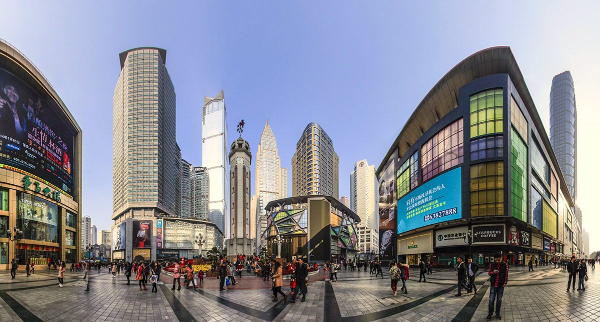

...
<
解放碑
<
磁器口
<
洪崖洞
<
...
重庆·解放碑
景点图片
- 

重庆解放碑作为重庆的标志建筑物之一，经常出现在各种商品及场所的徽标之中。重庆解放碑位于渝中区民族、民权、邹容三大路交汇的十字路口，通高27.5米，有旋梯可达顶端。该建筑最初落成于1940年3月12日孙中山先生逝世纪念日，为低矮木质结构，称“精神堡垒”。1945年抗战胜利后重建，题名为“抗战胜利纪功碑”。1950年由刘伯承改题“重庆人民解放纪念碑”。解放碑中心购物广场不仅是长江上游的黄金商贸区，也是中国西部最大的商业步行街区，集购物、休闲、旅游、商务、餐饮、娱乐等综合功能于一体。 中心区区域内有7600个第三产业机构（单位），其中批发零售企业5253个；营业面积超过5000平方米的大型商场有20多家；全市十大西部之最的商业企业，在解放碑商贸中心区就占了五个；星级饭店（酒楼）10余家。
最佳季节：3-5月、9-11月。春秋季节重庆气候最为适宜，在解放碑附近逛街是不错的选择。 夏冬两季也可在最大小吃街体验巴渝特色美食。
建议游玩：1-2小时
门票：免费
开放时间：全天
地址：重庆主城渝中区民权路、民族路和邹容路交汇处
新建的重庆美术馆于2013年在解放碑国泰艺术中心正式挂牌启用，原挂牌于九龙坡区黄桷坪四川美术学院内的重庆美术馆改为重庆当代美术馆。
重庆美术馆是在原重庆画院（重庆国画院）基础上组建，系公益性文化事业机构，是重庆市文化委员会直属事业单位。承担美术作品的陈列布展、征集收藏工作，指导美术作品的创作、推广，开展美术学术理论研究、对外交流工作，开展美术培训等服务。于2013年10月建成开馆并免费对外开放。
位于解放碑国泰艺术中心新建的重庆美术馆共有近万平方米。在展厅中间，一条转折的红色钢架楼梯与6楼展厅相连。爬上转折楼梯，在转折处往下看，立体广阔的空间效果，让人感觉进入了“天空之城”，要是摆上画作，会更有感觉，美术馆的空间感是一大亮点。
除了大型展览，美术馆的25个玻璃房子还可以为艺术家们举办个人展览。在现场看到，每个玻璃房面积近100平方米，且都有一扇近20平方米的落地窗。计划在里面安装投影设备，在玻璃窗上做城市形象的宣传。到时候，在美术馆里的市民可以看到美术展览，在美术馆外面的市民也可以看到另一种艺术。
新建的重庆美术馆定位以展出传统的国画、油画、版画和小型雕塑为主，兼顾摄影艺术、人体艺术、装饰艺术、行为艺术和工艺品的展示，并能够承接国内外工艺美术品的展览和举办各类文化艺术交流活动。


.jpg)
.jpg)
.jpg)
.jpg)